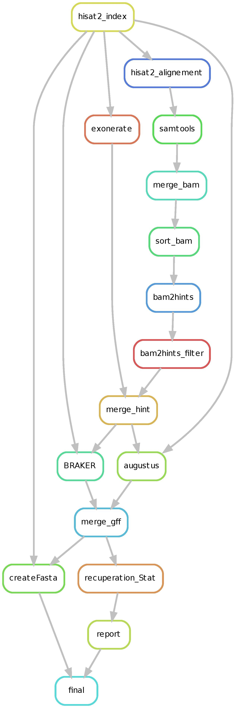

Annotation pipeline¶
This Annotation pipeline is an automatic structural annotation workflows written in snakemake. The annotation is based on two tools which uses RNA-Seq and/or protein homology information for predict coding sequence. One of this tools is BRAKER [ref & lien] which use GeneMark-EX [ref] and AUGUSTUS [ref]. And the other tool is Augustus [ref] alone for improve annotation of small coding sequences with few or no intron.
{kind=link}
Mandatory installation¶
Prepare config file¶
To run the workflows you have to provide the data path for all input file. Please complete the config.yaml file for launch the workflow.
1. Providing data¶
{
"datadir" : "/homedir/user/work/Masked_assembly/",
"OutDir" : "/homedir/user/work/pipeline_output/",
"RnaSeqDir" : "/homedir/user/work//rnaseq/",
"id_souche" : "magnaporthe_oryzae",
"protRef" : "/homedir/user/work/Annotation_pipeline/SupplementaryFile/OG_filter.fasta"
}
datadir : Path of you directory which contain all your fasta file to annotate.
RnaSeqDir : Path of the directory which contain all RNAseq data,
id_souche : ID of species for augustus trainings, please refers to augustus main page for this option
protRef : Path of the protein fasta file.
OutDir : Output directory for all results of this pipeline
Launching on a single machine¶
To launch this annotation pipeline on a single machine, please use the command :
snakemake -s annotation_pipeline.snake --latency-wait 555555
2. Launching on HPC clusters¶
Preparing cluster configuration using cluster_config.yaml¶
On cluster_config.yaml, you can add partition, memory and to be used by default for each rule. This pipeline is used on cirad HPC [link], so the environment (module load command) and sge submission works only on the cirad cluster. Please adapt the content of this file before running on a cluster with your cluster parameters or if you need more memory for a rules.
Here is a example of the configuration file we used on the Cirad HPC.
__default__:
n_cpu: "-pe parallel_smp"
mem: "-l mem_free=4G"
export_env: "-V"
cwd: "-cwd"
logerror: "-e "
log: "-o "
queue: " -q long.q"
scheduler: "qsub"
###### Cluster parameters for hisat2_index rules ########
hisat2_index :
mem: "-l mem_free=4G"
queue: " -q normal.q"
Launch workflows¶
For launch the pipeline in a cluster please use the Launcher.sh give in the directory.